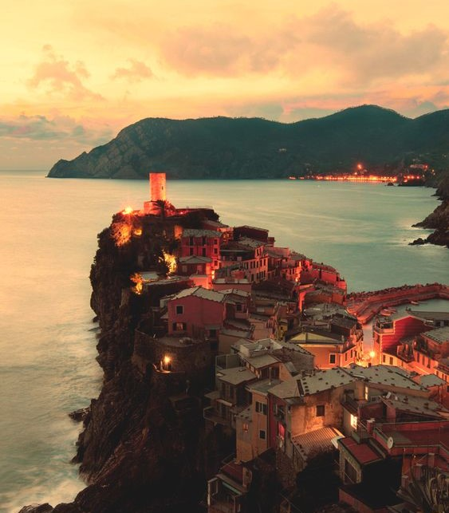
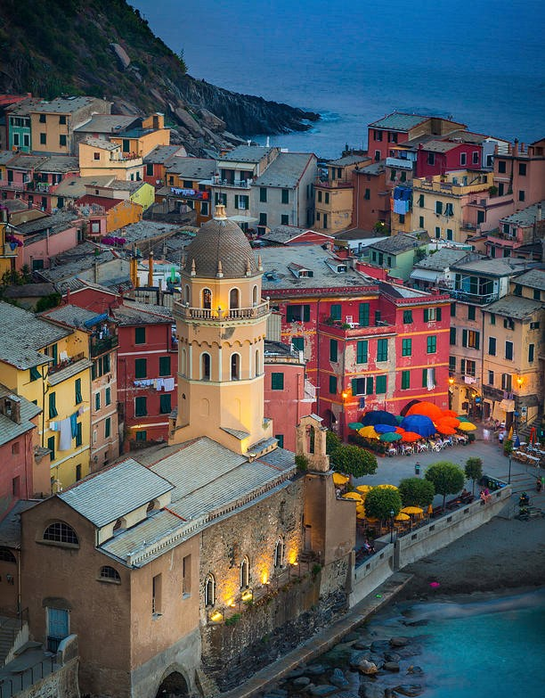

Mnogi Vernazzu smatraju najljepšim selom nacionalnog parka Cinque Terre. Selo se nalazi na brdu Reggio, a usko korito potoka uz koji je sagrađeno, sakrivalo je selo od osvajača s mora. Mali špiljski prolaz sa lijeve strane vodi ravno na more. Uske ulice idu dolje prema glavnoj ulici koja se otvara u malom trgu, Piazza Marcon koji gleda na more.

Vernazza
Znamenitosti
Od znamenitosti ističu se dvorac Doria iz 15. st. koji je služio kao vidikovac s kojeg se na horizontu moglo vidjeti približavanje s mora te gotička Crkva sv. Margarete Antiohijske. Prema legendi, crkva je sagrađena nakon što je na plaži nađen drveni sanduk sa kostima sv. Margarete. Lokalno stanovništvo potom je odlučilo da sagradi crkvu, ali na drugom kraju sela, gdje su je uništili jaka oluja i snažni valovi. Crkva je ponovno sagrađena na samoj plaži gdje se nalazi i danas.

Crkva Sv. Margarete
Poplava
2011. selo je nastradalo u velikoj poplavi koja je donijela nekoliko metara visoke nanose blata i pijeska, a sa sobom odnijela i ljudske žrtve čemu svjedoče strašne fotografije na ulazu u selo.